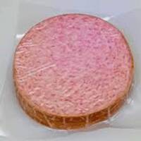

Commonly regarded as the armpit of the United States, few Americans think of New Jersey as a beautiful or stimulating place. However, outside the industrialization and dense suburbs, there are pockets of nature and quaint, charming towns. New Jersey also has a rich culture of people passionate for bagels, beach towns, diners, and not pumping our own gas. There’s plenty to hate, but more to love. Allow me to introduce Central Jersey!
I live in Mercer County, which is home to the capital of New Jersey, Trenton, and Princeton University. Being about an hour from both Philadelphia and New York, there are far more farms in this part of New Jersey than you’d expect. There are plenty of trails, some small mountains, and fields, all bordering the Delaware River. People often forget New Jersey is nicknamed “The Garden State” and you’ll find there’s a surprising amount of greenspace for the most densely populated state in the US.
But the most important thing about New Jersey is the culture. Here are a few things you need to know aout New Jersey-ians and what we care about to visit.
1. North vs South Debate
2. Pork Roll vs Taylor Ham
3. Not pumping our own gas
4. Wawa
5. Bagels
6. Beach Towns